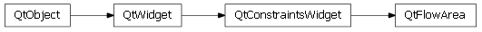

Bases: enaml.widgets.constraints_widget.ConstraintsWidget
A widget which lays out its children in flowing manner, wrapping around at the end of the available space.
The flow direction of the layout.
The alignment of a line of items within the layout.
The amount of horizontal space to place between items.
The amount of vertical space to place between items.
The margins to use around the outside of the flow area.
A read only property which returns the area’s flow items.
A FlowArea expands freely in width and height by default.
alias of __NoInterface__

Bases: enaml.qt.qt_constraints_widget.QtConstraintsWidget
A Qt implementation of an Enaml FlowArea.
Handle the ‘set_horizontal_spacing’ action from the Enaml widget.